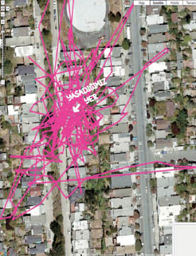
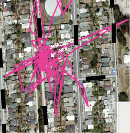
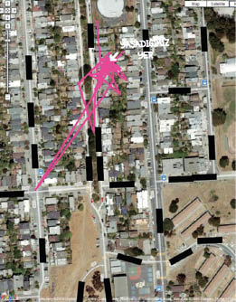
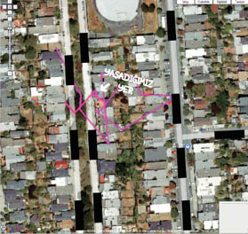
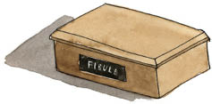

11
Birlikte geçirdiğimiz on üç yıl boyunca, Tibby eve döndüğümde beni bir kez bile karşılamamıştı. Oysa o gece sahanlıkta, merdivenin en üst basamağının yakınlarında oturuyordu. Kedilerin yüzlerinde fazla kas olmadığını söylüyorlar, ağlayan bir Homo sapien’den daha metanetli görünmelerinin sebebi de bu. Ancak Tibby’nin uzaylı gözlerinin bebekleri irileşmişti. Kuyruğu gevşekçe yerde yatıyordu. Sıçramaya hazırlanan bir balet gibi, iki ön patisi biri hafifçe diğerinin önüne gelecek şekilde bitiştirilmişti; sırtındaki tüyler de kabarmıştı. Yüz kaslarına ihtiyacı yoktu, bir soru sorduğu çok açıktı.
Fibby nerede? İkizim nerede?
Koltuk değneklerime dayandım, o da gözlerini dikip bana baktı. Yanaklarımı kurularken, akan burnumu koluma gömerken de bakmayı sürdürdü. Wendy yanımda belirince ona da baktı. Sonra birdenbire ayağa kalkıp çalışma odasına gitti. Birkaç saniye sonra çıktı, bize bir bakış atıp misafir odasına yollandı. Orada, köşeleri ve sandalyelerin altını yokladı. Bütün boşlukları kontrol ettikten sonra yeniden ortaya çıktı. Oturdu. Derin bir Pavarotti miyavlaması koyverdi, sesi o kadar yüksek ve acılıydı ki Wendy de ben de irkildik.
Wendy, “O gitti,” dedi Tibby’ye.
Ama Tibby başka bir odayı aramak üzere ayaklandı.
Tibby günlerce Fibby’yi aradı. Bunu biliyoruz, çünkü GPS cihazı tasmasında takılı kalmıştı. Pembe çizgiler artık kedice bir matemin hikayesini anlatıyordu.
Önce evi ve çevresini aradı, izleri arka bahçede, oturma odasında ve üst katta daireler halinde çizgiler çiziyordu.
iNKAR3

Arayışı gitgide delice ve öfkeli bir hal aldı. Wendy’yi de beni de görmezden geliyor; başını eğmiş, kuyruğunu titreterek ve gözleri etrafta dört dönerek yürüyordu.
ÖFKE4

Derken haritalar ilerledikçe, çizgiler çökmeye başlayan bir karadeliği andırır biçimde içeri doğru yoğunlaştı. Tibby artık arka bahçede gezmiyordu. Araştırmalarını evle sınırlamıştı. Sonra daha az yürümeye, daha çok yatmaya başladı.
PAZARLIK5

Çizgiler birbiriyle çakışan üçgenler halini aldı. Tibby sanki enerjisini yitiriyor ve yavaş yavaş gerçeği anlıyordu: Fibby bulabileceği bir yerde değildi.
Nihayet on üçüncü haritada çizgiler hepten kesildi. Tibby artık hareket etmiyordu. On saatlik o dönem boyunca izleri yalnızca hüzünlü bir ikizkenar yamuktan ibaretti.
DEPRESYON6

O sırada, insanların durumu da çok parlak değildi. Göğsümde Fibby biçimli bir oyuk vardı. Kanepeye uzanıyor, sonra Fibby’nin başını boynuma dayadığından emin bir halde sıçrayarak uyanıyordum. Ama Fibby yoktu. Yalnızca hayalet gölgesi, geride bıraktığı ağırlığı ve sıcaklığı, iz halinde anısı vardı.
Bizi terk eden kedi yanımdaydı; bizden ayrılmayan kediyse sonsuza kadar gitmişti.
Fibby’nin külleri sade ahşap bir kutu içinde geldi. Wendy’ye, bununla yüzleşmeye hazır olduğumda onu arka bahçeye dökeceğimizi söyledim. Büyük ihtimalle hiçbir zaman hazır olmayacağımı dile getirmedim.7
Wendy sersem sersem ortada dolanıyordu. Hayatının büyük kısmını hayvanlara karşı kayıtsız geçirmişti. Ama şimdi gözlerini kuruluyor ve kendi kendine konuşuyordu.
Havaya doğru, “Fibby’yi özlüyorum,” dedi.
Evdeki sessizliğe, “Fibby’yi özlüyorum,” diye fısıldadı.
Kolumu sımsıkı yakalayarak bana, “Fibby’yi özlüyorum,” dedi. Gözyaşlarını tutmaya çalışıyordu. “Sanki hayatımızdaki bir kedicik ışığı söndü.”
“Kedi ışığı mı demek istemiştin?” diye sordum.
“Hayır,” diye çekti burnunu. “Kedicik ışığı.”

3 İnkâr, Elizabeth Kübler-Ross’un acının beş aşaması olarak adlandırılan modelinin ilk aşamasıdır. Bu aşamada, matem tutan kişi korkunç habere inanmayı reddeder.
4 Bu aşamada, duygusal açıdan sarsıntı geçiren kişi kendisine ya da başkalarına, özellikle de yakınlarına karşı öfke hissedebilir.
5 Pazarlık aşaması Tibby için kesin sınırlarla belirlenmemişti, gerçi kedimin evden fazla uzaklaşmamasıyla ifade edilmiş olabilir. “İkizimi geri alırsam, bir daha başımı alıp gitmeyeceğime söz veririm.”
6 Tibby vazgeçmişti.
7 Babam San Francisco’ya taşındığında, yakılmış hayvanlarının külleri de çeşitli dekoratif kutular ve torbalar içinde onunla birlikte geldi. Bana onları uygun yerlere dökme, dağıtma işiyle ilgilenmeye vakit bulamadığını ama bunu en kısa sürede yapacağını söyledi. Öldüğünde, hâlâ açılmamış kutuları topladım; babamın küllerinin konduğu kutu da aralarındaydı. Hoşçakal Molly, Hoşçakal Divvy, Hoşçakal Twiggy, Hoşçakal Cleo, Hoşçakal Pru, Hoşçakal Itty Bitty Kitty, Hoşçakal Baba. Elimi ipeksi kalıntılara daldırdım ve babamın yapmayı yüreğinin götürmediği şeyi onun için yaptım, külleri öksürerek dağıttım.